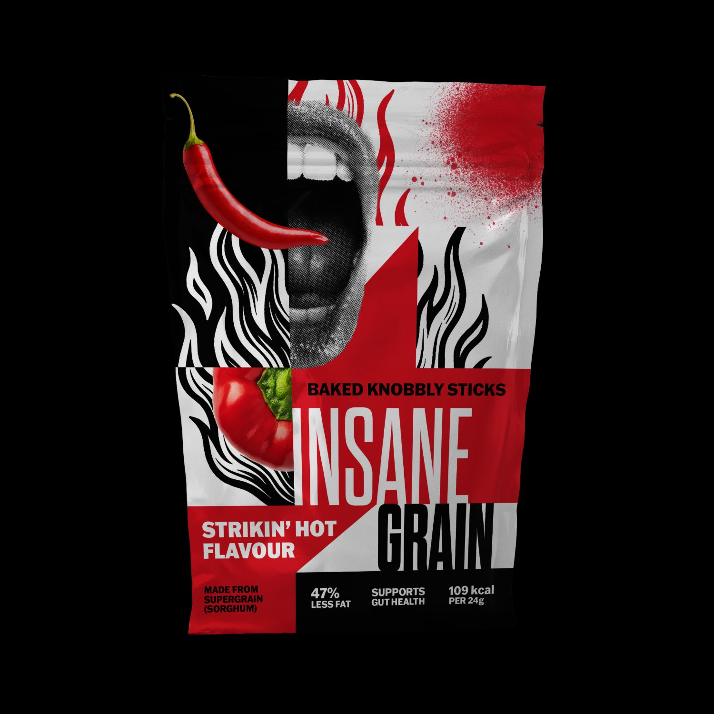
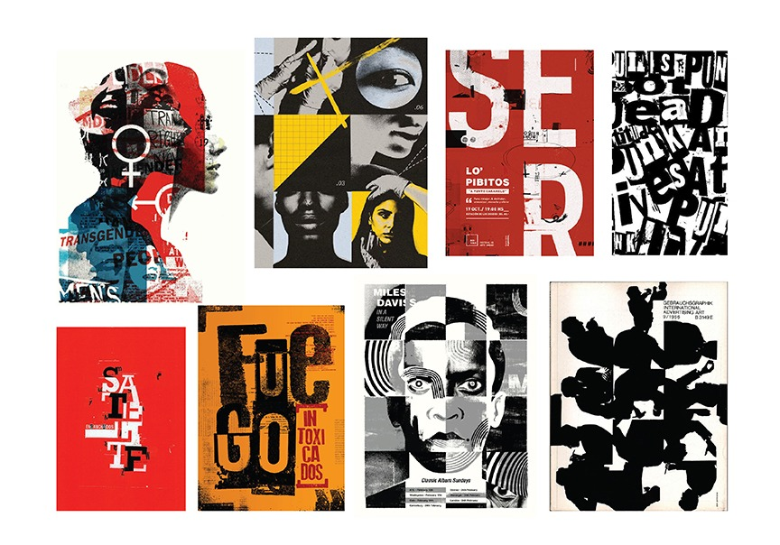
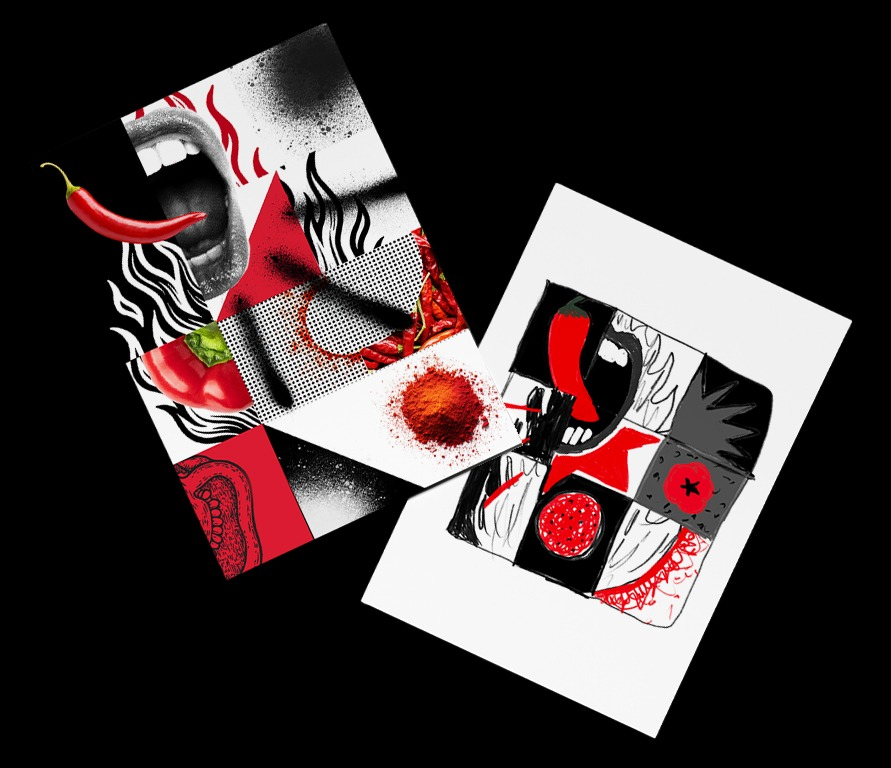
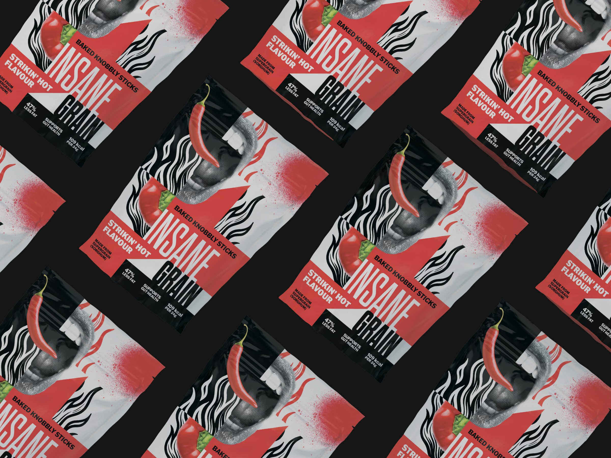
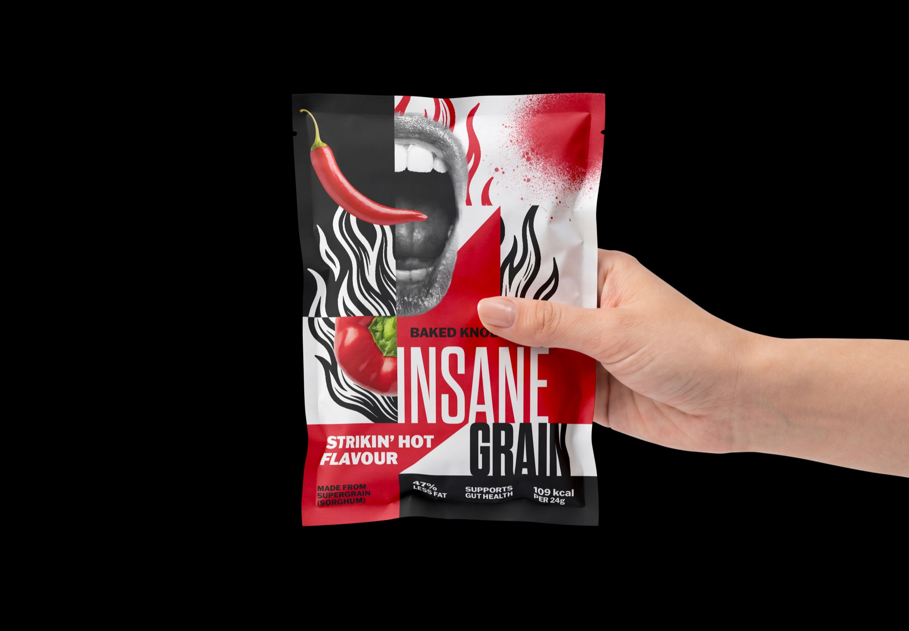
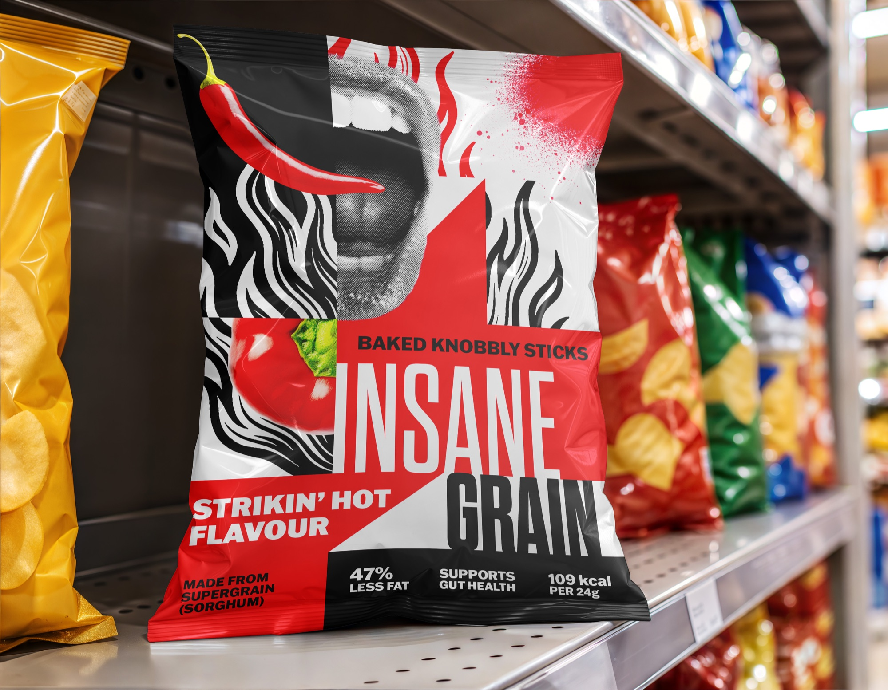
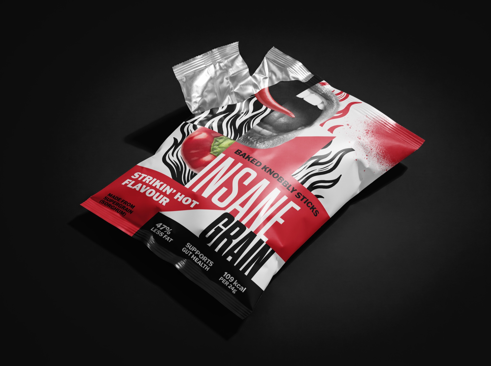

Case study · Packaging · 2025
Insane Grain
A bold snack packaging concept combining health-conscious positioning with rebellious typography, high-contrast color, and skater-inspired energy.

Overview
Project
Insane Grain is a conceptual snack packaging project designed to give a health-conscious product a louder, more unconventional personality. The visual identity combines youthful energy, skater-inspired references, and an intentionally chaotic aesthetic while maintaining a clear information hierarchy.
Creative direction
The packaging uses a red, black, and white palette to establish a bold visual presence. Expressive typography and energetic compositions challenge the restrained, wellness-focused conventions often associated with healthier snacks. The goal is to make the packaging feel rebellious and approachable without allowing its personality to overwhelm essential product information.
Design approach
The system balances visual disruption with practical communication. Strong typography, contrasting colors, and expressive graphic elements create shelf presence, while a deliberate hierarchy keeps the product identity and supporting information legible. The related Strikin’ Hot variant extends the concept through a distinct flavor expression.
01 — Research
Borrowing from collage posters
I pulled collage portraits, halftone photography and loud poster typography: work that feels cut up, layered and a little unhinged, which is exactly what the name asks for.


02 — Sketches
Two early directions
A digital collage tested how photography, halftone and flat colour could share one surface. A marker sketch blocked out the grid underneath it.

04 — In context
Out in the world


